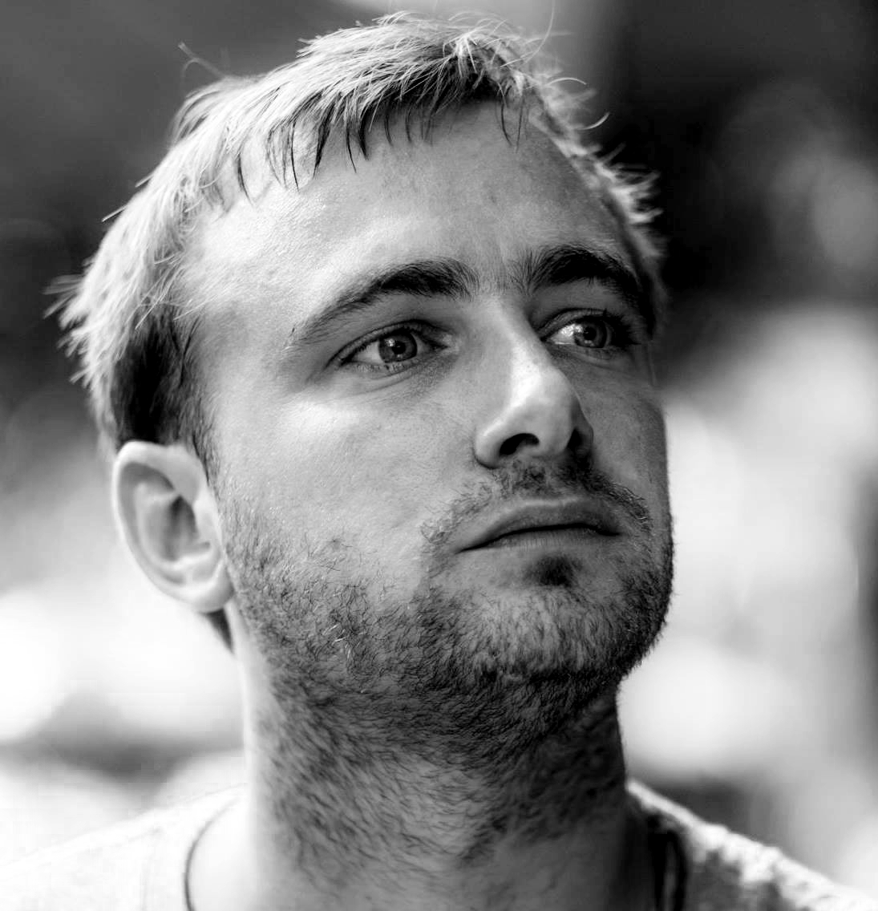

i'm very good at:
- PHP (Symfony)
- Javascript / Typescript
- Python
- Cloud Ops
- OOP
- databases
- system / software design
- algorithms
- refactoring
- debugging
i love:
- van life
- biking
- running
- traveling
- tech meet-ups
- speaking
i'm quite good with:
- UNIX command line
- server administration
- data engineering
- process optimization
- continuous deployment
i "do":
-
cloud
-
AWS: advanced.
- EC2, Fargate, S3, SQS, Kinesis, DynamoDB, RDS, Cloudformation - lots of experience, from trivial to extremely large scale.
- Strong grasp of networking, security, performance and cost control optimization.
- Strong grasp of highly-automated, large scale infrastructures.
- Exposure to most other services.
- Google Cloud: basics.
- Azure: basics.
-
Digital Ocean: intermediate.
- Solid grasp of compute, storage, networking, security, backup.
- Maintain various full stack sites.
-
containers
- Docker: expert.
- Kubernetes: basics.
- Development: Experience with Vagrant, Virtual Box, Docker.
- Provisioning: Puppet, Chef, Salt, Ansible, Cloudformation.
-
dev-ops
- I run my own shit in production.
- Always promoting more collaboration and understanding between developers and ops.
- Always lowering feedback cycle times, for tests, releases, system and business metrics.
- Always pushing for reproducibility in code, tests, releases, and infrastructure.
- Always automating all the things.
i speak fluent:
- english
- german
- enthusiasm
i do some speaking and writing:
-
Open Heart Surgery (In Production):
- Abstract: Refactoring trivago's "heart beat" - the main endpoint of the hotel search: 8 months of work, 60+ refactoring cycles, decoupling 5000 lines of "business logic", from un-testable to 100% test coverage.
- Slides: Speakerdeck
- trivago Tech Days 2015
- PHPUNCONF 2015 in Hamburg
- PHP User Group 2016 in Dusseldorf
- SymfonyLive 2016 in Cologne (German video: Youtube)
- Amsterdam PHP October Meetup 2016 in Amsterdam
-
A Stupidly Simple Introduction to Stupidly Complicated Stuff:
- Abstract: An introduction to machine learning.
- trivago Tech Days 2016
-
Creating a Culture of Quality:
-
Beyond the To-Do List:
- Abstract: A talk on advanced Javascript architecture patterns, above and beyond the standard To-Do list tutorials.
- Slides: Speakerdeck
- FOSDEM 2014 in Brussels
- JSUNCONF 2014 in Hamburg
i have some side projects:
-
roks.gg
- Technologies: PHP, Symfony, PostgreSQL, Docker, Python, tesseract
- Site for player management and data collection for the mobile game Rise of Kingdoms.
- OCR (tesseract) scripts for reading game screenshots and updating player data.
- Responsible for all aspects of design, development and deployment.
-
Pack Shakedown
- Technologies: PHP, SQLite, Javascript, Docker, Elasticsearch
- Site for creating, improving and sharing pack lists.
- Responsible for all aspects of design, development and deployment.
i have worked at:
-
Nira as a Staff Software Engineer from May 2022:
- Technologies: Javascript, Typescript, Python, Go, PostgreSQL, Elasticsearch
- AWS: Lambda, RDS, Kinesis, ECS, Fargate
- Designing, coding and maintaining an ingestion pipeline.
-
GRID as a Staff Software Engineer from November 2020 to April 2022:
- Technologies: Javascript, Typescript, MongoDB, React Native
- AWS: Fargate, Cloudformation, MongoDB Atlas, CloudFront, Route53
- Designing, coding and maintaining a Node.js backend for React Native apps.
- Porting Javascript backend to Typescript while maintaining feature velocity.
- Building and maintaining a GraphQL interface for multiple frontends.
- Scaling and designing cloud systems.
- Porting legacy backend deployments to a modern, infra-as-code services.
-
FYI as a Senior Software Engineer from February 2020 to September 2020:
- Technologies: Python, PostgreSQL, Elasticsearch, Terraform, GraphQL
- AWS: Lambda, RDS, Kinesis, ECS, Fargate, CodeBuild
- Designing, coding and maintaining a Chalice backend app for a React application.
- Designing, coding and maintaining Lambda-based data pipelines for document ingestion.
- Porting backend from lambdas to microservices when scale made serverless too expensive.
- Rewrite backend database layer for 10x performance.
- Create GraphQL layer next to old REST APIs.
-
Teleboy (myTV AG) as a Senior Software Engineer from September 2018 to December 2019:
- Technologies: PHP, MySQL, Elasticsearch, Rabbit MQ
- Software:Symfony 3 / 4, Jetbrains IDEs, Linux, Vagrant
- Designing, coding and maintaining a service-based landscape of Symfony applications.
- Designing, coding and maintaining a large, complex and versioned API used by Android, iOS, web and other consumers.
- Maintaining and improving subscription and payment handling.
- Switching external streaming providers with no customer outages.
-
ARTACK WebLab GmbH as a Senior Software Engineer from October 2017 to June 2018:
- Technologies: PHP, MySQL, Javascript, React
- Software: Symfony 3 / 4, Jetbrains IDEs, Linux, Vagrant, mailXpert
- Designing, coding and maintaining a large, legacy PHP application.
- Development of email automation feature for mailXpert application.
- Designing, coding and maintaining a large, complex React application.
- Developing new applications in PHP7 / Symfony 4.
-
GetYourGuide (Zürich) as a Senior Software Engineer from April to July, 2017:
- Technologies: PHP, MySQL, ElasticSearch
- Software: Jetbrains IDEs, Linux, Docker, DataDog, New Relic, DroneCI
- Designing, coding and maintaining a large, legacy PHP application.
- Porting legacy applications to Symfony 3.
- Improving test coverage and CI, promoting testing across company.
- Support / solving bug ticket for large legacy application.
-
Nectar Financial as a Senior Software Engineer from January to March, 2017:
- Technologies: Javascript, ES6, Node.js, Docker, Couchbase, ElasticSearch
- Software: Jetbrains IDEs, Linux, Docker, CircleCI
- Designing, coding and maintaining a multiple component Node.js finance application.
- Coding a financial math library for consumption by main application.
- Tuning and maintaining a full-text search across a full database replica in ElasticSearch.
-
trivago as a Senior Software Engineer (Amsterdam office) from 2016 to 2017:
- Technologies: Python, EC2, Lambda, SQS, Kinesis, DynamoDB, ElasticSearch, Cloudformation
- Software: Jetbrains IDEs, Linux, OSX, AWS Command Line, GoCD
- Designing, coding and maintaining large-scale data pipelines.
- Setting up monitoring and alarming systems.
- Semantic analysis.
- Creating, automating and maintaining large infrastructures "as code".
- Work with Amazon Web Services at scale.
- Cost optimization of cloud infrastructures.
-
trivago as a Senior Software Engineer from 2012 to 2016:
- Technologies: PHP, MySQL, HTML, CSS, Javascript, Puppet, SALT, Redis, memcached, Kafka
- Software: Mantis, Jira, Jetbrains IDEs, Linux, OSX
- Development and maintenance of trivago's main Hotel Search product.
- Developer in 8-month complete platform re-write to Symfony 2.
- Lead Developer on multiple product development and refactoring projects.
- Scaling web traffic to ~120 million visitors a month and ~4 million search queries a day.
- Supporting massive team growth with work on recruiting, processes and culture.
- Converted release process from bi-weekly to multiple releases per day.
- Lead Developer / Team Lead of multiple product development and support teams.
- Release Maintainer responsible for release coordination and chasing down release and scaling issues.
- Mastering complex, high-scale, multi-datacenter infrastructures.
-
Globalpark AG (now Questback) as a PHP developer from 2009 to 2012:
- Technologies: PHP, MySQL, HTML, CSS, Javascript, C#, Java
- Software: Zend Studio, Linux, VIM, Jira, Enterprise Feedback Suite (online market research software)
- PHP / MySQL development in various versions of a large online market research software application.
- Customer support and training for same application (over 6 major release versions).
- Development and support for large amounts of customized code (online diary for consumer information) for one major client on 80 live installations.
- Linux server administration (multiple frontends, multiple master / slave databases, complex cronjob systems, mailing systems).
- Work with massive-scale CSV imports / exports: debugging, customer support, analysis.
- Creating websites with custom CMS system.
- Critical upgrades over up to 6 major software versions, including migration of complex, customized code and large data quantities.
- Large scale data correction / recoding via scripts.
- Code refactoring / standardization.
- Building up test suites with PHP unit tests and Selenium / WebDriver click tests.
-
- Completed Ausbildung zum Fachinformatiker.
- Technologies: C / C++ / C# / Assembler / Labview
- Software: Microsoft Visual Studio (2005, 2008), Labview Visual Instruments
- C/ C++ development of the modusAOI software (automatic optical inspection of PCBs).
- Development, debugging and support for various ActiveX components.
- Algorithm / code optimization using Assembler / SSE2.
- Developing, debugging, improving and testing image analysis and image filter algorithms.
- Construction and on-site installation / maintenance of modusAOI systems.
- Translation of modusAOI software manual (German to English).
-
Photography:
- freelancer (event, portrait, studio, sport photography) from 2011 to present
- virtual nights (event and party photography) from 2011 to 2013
- tonight.de (event and party photography) from 2013 to 2015
- Sportograf (sport photography) from 2014 to 2016
-
SCUBA Diving: